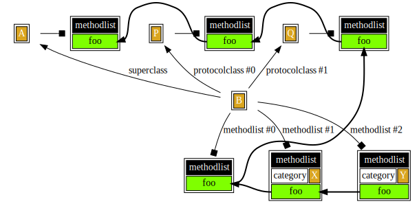
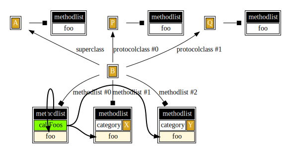

Advanced: Calling overridden methods
Welcome to the “Advanced” section of “De Re mulle-objc”. This is a deeper dive into mulle-objc and what it provides.
In Objective-C the standard way to access an overridden method is a
super call. The runtime and MulleObjC functions give you more options though.
So check out this little class system for a class B:
@interface B : A <P, Q>
@end
@interface B( X)
@end
@interface B( Y) // depends on X
@end
B has two categories X and Y (shortend from B( X) and B( Y)) A is its superclass and P and Q are adopted protocol classes.

[super foo]
Lets recapitulate how calling a super method works in this scenario.
Lets put into each class (A, B), protocol class (P, Q) and
category (X, Y) a method named foo . If possible, -foo should call
[super foo].
- (void) foo
{
[super foo];
}
Calling super from root classes is impossible. And protocol classes are
always root classes. So A a regular root class and
the protocol classes P, Q will have only empty method bodies.
- (void) foo
{
}
When foo of an instance of B is called maybe like so:
void example( B *b)
{
[b foo];
}
the most recently added methodlist closest to the instance class will be
searched first. So foo of category Y will be executed:

Our Y implementation looks like this:
@implementation B( Y)
- (void) foo
{
[super foo];
}
@end
The call to super will forego the implementation in all other methodlists
of B and will then look for a method in any protocol classes and then
the superclass.
As with the methodlists the protocol classes are searched in reverse order.
Therefore foo of protocol class Q will be found and executed for
[super foo].
There the chain ends, as we have reached a root class. So in effect the
methods foo in A or P and the foo methods in B and X are
unreachable via super.
MulleObjCOverriddenIMP
With the special macro MulleObjCOverriddenIMP we can traverse the complete
chain. Let’s implement foo in all classes, categories and protocol classes
like this:
- (void) foo
{
IMP imp;
imp = MulleObjCOverriddenIMP;
if( imp)
MulleObjCIMPCall0( imp, self, _cmd);
}
Due to its dynamic nature, foo will only call an overridden implementation, if
one exists.

In our class system the implementation of foo in A will get a NULL value
from MulleObjCOverriddenIMP and then the call chain stops.
Looking up a method with
MulleObjCOverriddenIMPis not very fast though. If you can usesuperusesuperinstead.
MulleObjCClobberedIMP
MulleObjCClobberedIMP is similiar to MulleObjCOverriddenIMP but stops at
the class boundary. This can be useful for writing patch categories, if you
can’t subclass for some reason:
- (void) foo
{
IMP imp;
imp = MulleObjCClobberedIMP;
if( imp)
MulleObjCIMPCall0( imp, self, _cmd);
}

MulleObjCClassCategoryIMP and MulleObjCClassIMP
For those special moments, where you want to search for a specific method
in the class hierarchy you can use MulleObjCClassIMP or
MulleObjCClassCategoryIMP.
Assume you are writing -foo in category Y and want to call -foo of
X:
- (void) foo
{
IMP imp;
imp = MulleObjCClassCategoryIMP( B, X);
if( imp)
MulleObjCIMPCall0( imp, self, _cmd);
}
If you want to call -foo of B:
- (void) foo
{
IMP imp;
imp = MulleObjCClassIMP( B);
if( imp)
MulleObjCIMPCall0( imp, self, _cmd);
}
If you want to call -foo of A:
- (void) foo
{
IMP imp;
imp = MulleObjCClassIMP( A);
if( imp)
MulleObjCIMPCall0( imp, self, _cmd);
}
and so on.
MulleObjCClassSearchInstanceClobberChain
If a class wants to call all instance methods foo defined by itself and
its categories, it can use MulleObjCClassSearchInstanceClobberChain.
This function will add the implementations of Y, X and B to an
array of type IMP - in that order.
@implementation B
- (void) callFoos
{
IMP imps[ 8];
unsigned int i, n;
n = MulleObjCClassSearchInstanceClobberChain( self, @selector( foo), imps, 8);
assert( n <= 8);
for( i = n; i;)
MulleObjCIMPCall0( imps[ --i], self, @selector( foo));
}
@end
callFoos calls the implementations in reverse order, which is often more
useful. Therefore B’s foo will be called first, then X and then Y:

There is also a function MulleObjCClassSearchClobberChain to retrieve
class methods.